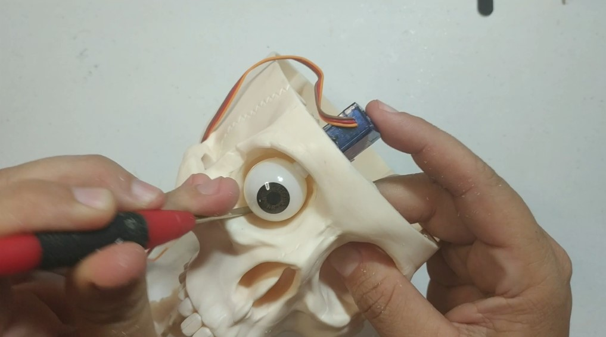
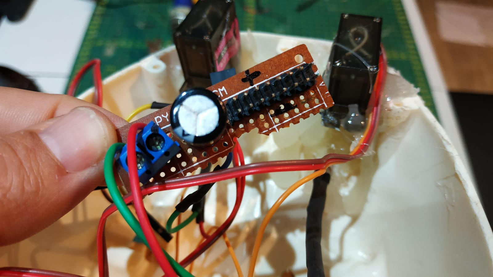

-
Atividades Maker
Atividades maker são uma paixão desde criança. Faço projetos de marcenaria até experimentos de eletrônica, eu adoro trabalhar em projetos DIY (faça você mesmo) e explorar a criatividade. Cada projeto maker é uma oportunidade de aprendizado e de transformar ideias em realidade.
 -
Eletrônica
A eletrônica é uma parte fundamental da minha vida. Tenho explorado o mundo dos circuitos, componentes e dispositivos eletrônicos. Criar projetos com microcontroladores e explorar a eletrônica como um hobby me proporcionam um profundo entendimento da tecnologia e uma constante sensação de realização.
 -
Cinema
O cinema é uma das minhas grandes paixões. Assistir a filmes de diferentes gêneros e culturas me permite explorar novas perspectivas e histórias emocionantes.

-
Fotografia
A fotografia é uma das minhas paixões. Capturar momentos especiais, paisagens impressionantes e detalhes do dia a dia é algo que me traz grande satisfação. Através da fotografia, posso expressar minha criatividade e compartilhar belas histórias visuais com os outros.